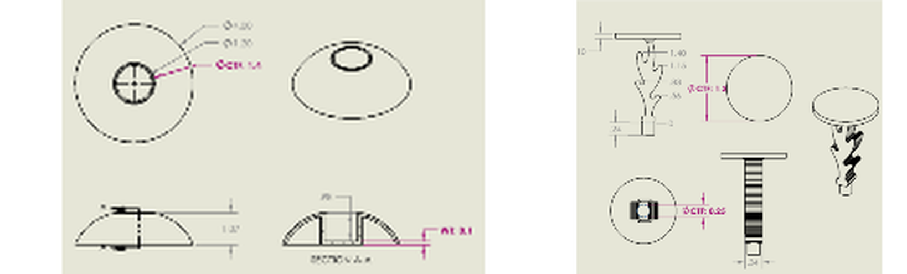
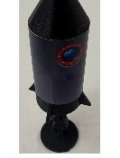

McRocket
3D MODELS
A six-part ABS Happy Meal toy designed for injection molding: snap-fit, no batteries, under $0.36 per unit against the course's $0.50 material-plus-cycle-time cost cap, safe for ages 4 to 8. On a team of four over a 1.5-week sprint I owned the nose cone and the decorative flame, and I drove the design-for-manufacturing decisions that made the whole toy moldable in a straight-pull tool.
Motivation
An EGR 121 DFM challenge with hard gates. Every part has to beat the 1.25″ choke threshold, snap onto the cylinder body, mold without side-actions, and land under the course's per-unit cost model.
My role
I owned the nose cone and the decorative flame through three-plus print iterations each, then led the DFM decisions across the assembly.
Technical approach
Tolerancing. The snap-fit is a 0.250″ peg into a 0.254″ hole. Worst-case stack-up on ±0.002″ molding tolerances gives 0.000″ minimum clearance (line-to-line) and 0.008″ maximum. The FDM prototype measured 0.004″ and confirmed the fit geometry, though printed tolerances do not stand in for molded ones.
DFM decisions. I scaled every part to 1.30″ OD after early prints failed the choke test. I removed the cylinder window that needed mold side-actions and replaced it with a decorative sticker at zero tooling cost. I standardized wall thickness at 0.03–0.10″ to prevent sink and warp, and enlarged the flame-joint fillet after the first version snapped.
What I would do differently. I abandoned a split-cylinder concept once printer tolerances made assembly impossible. The lesson I carry forward: run the DFM review before the first print.


